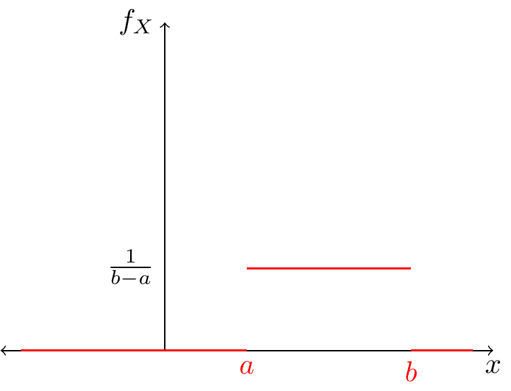
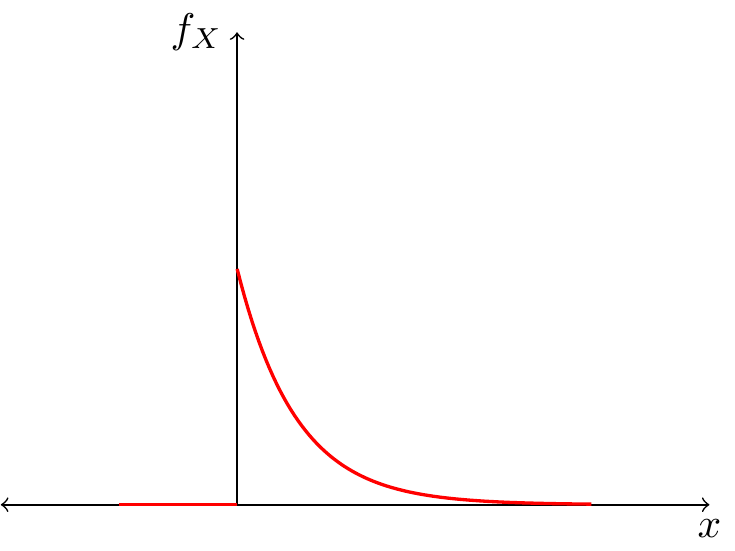
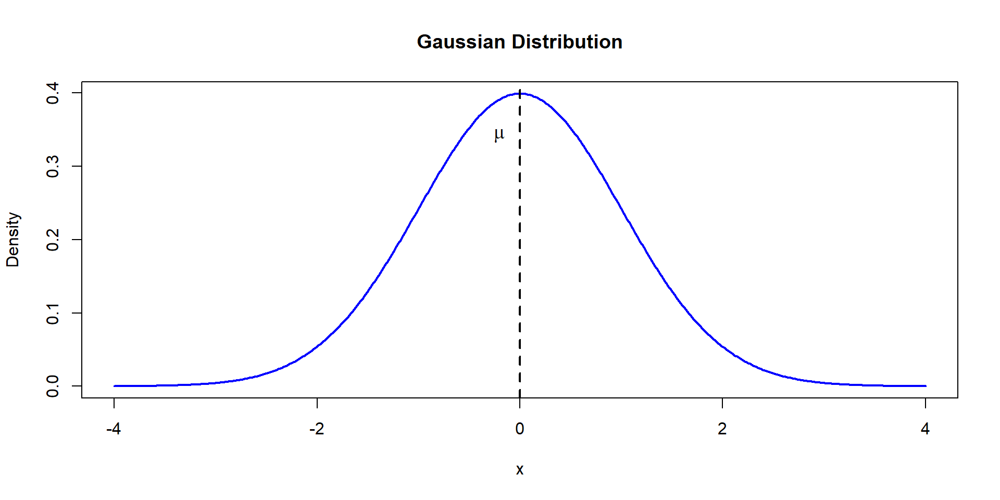
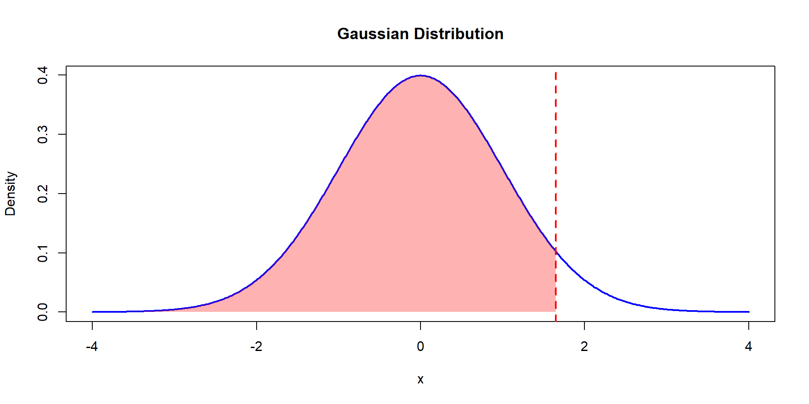
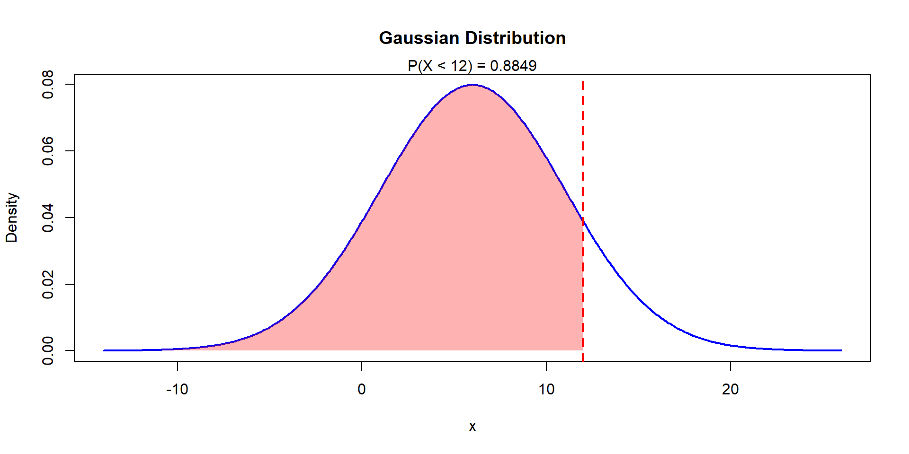
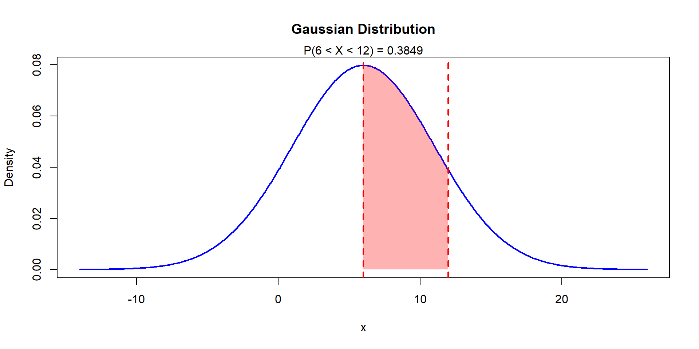
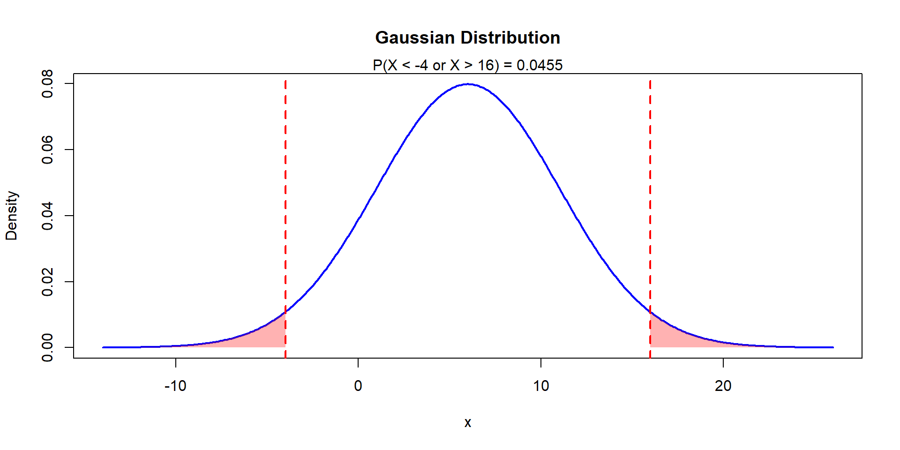
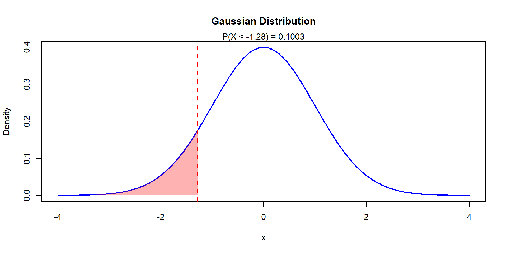
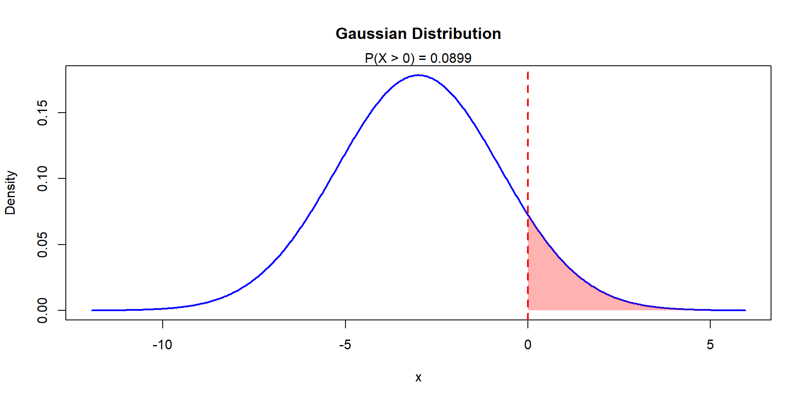

Continuous Probabilistic Models
Lisbon Accounting and Business School – Polytechnic University of Lisbon
Disclaimer
These slides are a free translation and adaptation from the slide deck for Estatística I by Prof. Sandra Custódio and Prof. Teresa Ferreira from the Lisbon Accounting and Business School - Polytechnical University of Lisbon.
Uniform Distribution
Continuous Uniform Distribution
A r.v. \(X\) follows a uniform distribution in \([a,b]\subset\mathbb{R}\) with \(-\infty<a<b<\infty\), if its probability density is given by:
\[ f_X(x)=\begin{cases} \frac{1}{b-a} & a\leq x \leq b\\ 0 & otherwise \end{cases} \]
We write \(X\sim U[a,b]\)
Continuous Uniform Distribution
Continuous Uniform Distribution
The cumulative distribution function is given by:
\[ F_X(x)=\begin{cases} 0 & x< a\\ \frac{x-a}{b-a} & a\leq x < b\\ 1 & x\geq b \end{cases} \]
Continuous Uniform Distribution
Note, this distribution is symmetric, and its first two moments are:
- \(E[X]=\frac{a+b}{2}\)
- \(V[X]=\frac{(b-a)^2}{12}\)
Continuous Uniform Distribution - Example
The length of small spots in a TV network is a r.v. \(X\) distributed \(U[5,12]\).
- Find its distribution function.
- What is the probability of a small spot last at least 7 seconds?
- The probability that a small spot lasts more than 6 seconds, given it never lasts more than 10 seconds is?
- Find \(E[X]\) and \(V[X]\)
Continuous Uniform Distribution - Example
Let the r.v. \(X\) be distributed \(U[2,b]\) with \(b>2\). What value must \(b\) take to make \(P(3\leq X\leq 5)=0.4\)?
Exponential Distribution
Exponential Distribution
The exponential distribution is rooted in the Poisson distribution, reflecting the waiting time between events originated according to a Poisson process.
Nevertheless, we can apply the exponential distribution to many other phenomena.
Exponential Distribution
A r.v \(X\) is distributed exponentially, with parameter \(\lambda>0\), \(X\sim Exp(\lambda)\), if its probability density function is given by:
\[ f_X(x)=\begin{cases} \lambda e^{-\lambda x} & x\geq 0\\ 0 & x< 0 \end{cases} \]
\(\lambda\) can be interpreted as the expected waiting time (or space) between events.
Exponential Distribution
Exponential Distribution
The cumulative probability function is:
\[ F_X(x)=\begin{cases} 0 & x< 0\\ 1-e^{-\lambda x} & x\geq 0 \end{cases} \]
And its moments are:
- \(E[X]=\frac{1}{\lambda}\)
- \(V[X]=\frac{1}{\lambda^2}\)
Exponential Distribution
Property
Lack of memory of the exponential distribution:
Let the r.v. \(X\sim Exp(\lambda)\), then:
\[P(X>x+h|X>x)=P(X>h)\]
with \(x,h>0\)
Considering the survival application of this distribution, this property states that, the time left to leave is independent of what it already lived.
Exponential Distribution - Example
In a factory, the execution time of a piece is random variable distributed exponentially with expected value of 5 minutes.
- For this distribution, what is the value of \(\lambda\)?
- You know that the piece has been in execution by at least 2 minutes. What is the probability that 4 more minutes are necessary to complete the piece?
- Picking randomly 5 pieces. What is the probability that 2 out of the 5 were produced in less than 4 minutes?
Exponential Distribution - Example
The time it takes until the first consultation, and between consultations, in the clinic of Dr. Shawn are independent and distributed exponentially with \(\lambda=0.1\).
What is the probability that no consultation occurs before the first 10 minutes?
Normal Distribution
Normal Distribution
The Gaussian or Normal Distributions is one of the most used distributions, playing a key role in statistical inference.
Rhe r.v. \(X\) is normally distributed, \(X\sim N(\mu,\sigma^2)\), if it’s density and cumulative probability distribution functions:
\[ f(x)=\frac{1}{\sigma\sqrt{2\pi}}e^{-\frac{(x-\mu)^2}{\sigma^2}}\\ P(X\leq a)=F(a)=\int_{-\infty}^a f(t)dt \]
Where \(E[X]=\mu\) and \(Var[X]=\sigma^2\)
Normal Distribution
Standard Normal
If \(\mu=0\) and \(\sigma^2=1\) we call this the standard normal distribution, where \(Z\sim N(0,1)\).
Theorem
Let \(X\sim N(\mu,\sigma^2)\). Let \(Z=\frac{X-\mu}{\sigma}\), then \[Z\sim N(0,1)\]
Standard Normal
That is, we can standardize a r.v. distributed Normally. Its probability function is denoted \(\Phi\), and its density is \(\phi\).
\[ \phi(z)= \frac{1}{\sqrt{2\pi}}e^{-z^2} \\ \Phi(z)=P(Z\leq z) = \int_{-\infty}^z \frac{1}{\sqrt{2\pi}}e^{-t^2} dt \]
Standard Normal
How do we know if a r.v. follows a Normal distribution?
- There is no rule, you need to look at the data (histogram) and decide.
- This distribution is popular because of the Law of Large Numbers and the Central Limit Theorem (covered in Statistics II)
- Even though it is by far the most popular, not always it is used correctly.
Example 1
Consider the r.v. \(Z\sim N(0,1)\). Find \(P(Z\leq 1.65)\).
\[P(Z\leq 1.65) = F(1.65)=\Phi(1.65)=0.9505\]
Warning
- This cannot be solved using the classical integration. Other techniques (approximations) are necessary.
- We will rely on Tables to find out the values for the Standard Normal distribution. Remember you can always standardize other Normal random variables.
- If \(z<0\), recall that the distribution is symmetric, then \(\Phi(-z)=1-\Phi(z)\)
Example 1
Example 2
Consider the r.v. \(X\sim N(6,25)\). Find \(P(X\leq 12)\).
\[P(X\leq 12)=P\left(\frac{X-6}{5}\leq \frac{12-6}{5}\right)\]
Or
\[P(Z\leq 1.2)=\Phi(1.2)=0.8849\]
Example 2
Example 3
If \(X\sim N(6,25)\), find \(P(X\leq 12)\)
\[ P(6<X\leq 12)=F(12)-F(6)= \] \[ P\left(\frac{6-6}{5}<\frac{X-6}{5}\leq \frac{12-6}{5}\right) \]
Or
\[ P(0<Z\leq 1.2)=\Phi(1.2)-\Phi(0)\\0.8849-0.5=0.3849 \]
Example 3
Example 4
Let \(X\sim N(6,25)\). Find \(P(X\leq -4)\) and \(P(X\geq 16)\)
\[ P(X\leq -4)=P\left(\frac{X-6}{5}\leq \frac{-4-6}{5}\right)=\\ P(Z\leq -2)=\Phi(-2)=1-\Phi(2)=0.0228 \]
Example 4
Example 5
Check that \(P(X\leq -4)=P(X\geq 16)\)
Because of symmetry: \(P(X\leq \mu-k)=P(X\geq \mu+k)\) \(\forall k\in\mathbb{R}\)
\(P(X\leq -4)=P(X\leq 6-10)=\\=P(X\geq 6+10)=P(X\geq 16)\)
Corollary
\(\Phi(-k)=P(Z\leq -k)=P(Z\geq k)=1-P(Z\leq k)=1-\Phi(k)\)
Example 6
Consider the distribution \(X\sim N(6,25)\)
Find \(P(0\leq X\leq 8)\)
\(P(0\leq X \leq 8)=P(0<X\leq 8)\) which is equivalent to
\[ P(-1.2<Z\leq 0.4)=\Phi(0.4)-\Phi(-1.2)=\\ \Phi(0.4)-\left[1-\Phi(1.2)\right]=\\ 0.6554-[1-0.8849]=0.5403 \]
Example 7
Consider the r.v. \(X\sim N(6, 25)\). Find \(P(|X-6|>10)\)
\[P(|X-6|>10)=1-P(X-6|\leq 10)\]
\[1-P(-10\leq X-6\leq 10)=1-P(-2<Z\leq 2)\]
\[1-[\Phi(2)-\Phi(-2)]=1-[\Phi(2)-1+\Phi(2)]\]
\[2-2\Phi(2)=2-2\times 0.9772=0.0456\]
Example 8
Cosnider the r.v. \(X\sim N(6,25)\), find \(k\) such that \(P(X>k)=0.9\)
\(P(X>k)=0.9\Leftrightarrow 1-P(X\leq k)=0.9\)
Or
\[P(X\leq k)=0.10 \Leftrightarrow P\left(Z\leq \frac{k-6}{5}\right)=0.10\]
\[P\left(Z\leq \frac{k-6}{5}\right)=0.10\Leftrightarrow \Phi\left(\frac{k-6}{5}\right)=0.10\]
Because of symmetry we have \(P(Z\leq -z)=P(Z\geq z)\)
Example 8
Using the table we find that \(P(Z\geq z)=0.1\) implies \(\Phi^{-1}(z)=0.1\) or \(z=\pm 1.282\). Substituting we get:
\[\Phi(-1.282)=0.1\Leftrightarrow \frac{k-6}{5}=-1.282\] \[k=6-1.282\times 5 = -0.41\]
Example 8
References
- Murteira, B.; Silva Ribeiro, C.; Andrade e Silva, J. & Pimenta, C., Introdução à Estatística, Escolar Editora, McGraw-Hill, 2010
- Paulino, C. D. & Branco, J. A. (2005). Exercícios de Probabilidade e Estatística. Escolar Editora
- Pimenta, F., Andrade e Silva, J.; Silva Ribeiro, C. & Murteira, B., Introdução à Estatística – 3ª Edição, Escolar Editora, 2015
- Ferreira, T., Custódio, S.G., Modelos Probabilísticos – Síntese Teórica e Exercícios Resolvidos, Edições Sílabo (1ª Edição), 2023
Normal Distribution
Theorem: Normal additivity
If \(X_1\sim N(\mu_1,\sigma_1^2)\) and \(X_2\sim N(\mu_2,\sigma_2^2)\), then for any \(a,b\in\mathbb{R}\) we have that \(T=aX_1+bX_2\), where \[T\sim N(\mu_T,\sigma_T^2)\]
To find \(\mu_T\) and \(\sigma_T^2\) remember the properties of the mean and variance.
Example 9
Let the r.v.s \(X\sim N(6,4)\) and \(Y\sim N(6,4)\), with \(T=0.5 X-Y\) Find \(\mu_T\) and \(\sigma_T^2\)
\[\mu_T=E[0.5X-Y]=0.5E[X]-E[Y]=\\ 0.5 \times 6 - 6 = -3\]
\[\sigma_T^2=V[0.5 X- Y]=V[0.5 X]+V[-Y]=\\ 0.5^2 V[X]+V[Y]= 0.25 \times 4 + 4 = 5\]
Example 9
Find \(P(T>0)\)
\(T\sim N(-3, 5)\)
\[P(T>0)=P\left(Z>\frac{0+3}{\sqrt{5}}\right)=1-P(Z\leq 1.34)=\\ 1-\Phi(1.34)=0.0901\]
Example 9
Normal Distribution
Corollaries
- \(X_i\sim N(\mu,\sigma^2)\) for \(i=1,\dots,n\), i.i.d.
- \(T=X_1+\dots+X_n\) with \(\bar{X}=\frac{T}{n}\)
Then:
- \(T\sim N(n\times \mu, n\sigma^2)\)
- \(\bar{X}\sim N\left(\mu, \frac{\sigma^2}{n}\right)\)
Example 10
Let \(X_i\sim N(120, 64)\) be r.v.s representing the number of bank deposits made in a specific day. Then \(T=X_1+\dots+X_5\) are the weekly deposits.
Find the probability of the weekly deposits exceed 620.
\(T\sim N(600, 320)\) because of the Normal additivity property.
Example 10
\[P(T>620)=P\left(Z>\frac{620-5\times 120}{\sqrt{5}\times 8}\right)=\\1-P(Z\leq 1.12)=1-\Phi(1.12)=0.1314\]
Appendix
Uniform Exercise
- \[ F_X(x)= \begin{cases} 0 & x<5\\ \frac{x-5}{12-5} & 5\leq x < 12\\ 1 & x\geq 12 \end{cases} \]
- \(F_X(12)-F_X(7)=1-\frac{2}{7}=\frac{5}{7}\)
- \(\frac{F_X(10)-F_X(6)}{F_X(10)}=\frac{5/7-1/7}{5/7}=4/5\)
- \(E[X]=\frac{5+12}{2}=8.5\), \(V[X]=\frac{(12-5)^2}{12}=\frac{49}{12}\approx 4 \Rightarrow \sigma_X\approx\sqrt{4}\approx 2\)
Uniform Exercise
- \(P(3\leq X\leq 5)=0.4\ \Rightarrow\ F_X(5)-F_X(3)=0.4\)
- \(\frac{5-2}{b-2}-\frac{3-2}{b-2}=0.4\ \Rightarrow\ \frac{3}{b-2}-\frac{1}{b-2}=0.4\)
- \(\frac{2}{b-2}=0.4\ \Rightarrow\ \frac{1}{b-2}=0.2\), but \(0.2 = \frac{2}{10} = \frac{1}{5}\)
- \(\frac{1}{b-2}=\frac{1}{5}\ \Rightarrow\ 5=b-2\ \Rightarrow\ b=7\)
Exponential Exercise
- \(\lambda=\frac{1}{5}=0.2\). On average 2 pieces are produced every minute. \(X\sim Exp(0.2)\)
- \(P(X>6|X>2)=P(X>4)=1-P(T<4)=\) \(1-\left(1-e^{-0.2\times 4}\right)=e^{-0.8}\approx 0.4493\)
- This problem calls for the binomial distribution, \(X~\sim Bin(n=5, p)\), however, we do not know \(p\). This is the probability that a single piece is produced in 4 minutes or less. \(p=P(X<4)\) with \(X\sim Exp(0.2)\). In this case \(p=P(X<4)=1-e^{-0.2\times 4}\approx 0.55\). Then, binomial \(X\sim Bin(5, 0.55)\), and then \(P(X=2)\approx 0.2757\).
Exponential Exercise
In this case the r.v. \(X\) is the time until the first consultation, and \(X\sim Exp(0.1)\).
\[P(X>10)=1-P(X<10)=1-F(10)\]
Or
\[1-(1-exp^{-0.1\times 10})=e^{-1}\approx 0.3679\]

Statistics I